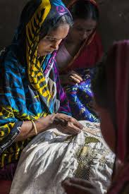

Rashida learned Nakshi Kantha from her mother and grandmother in their village home. She has been stitching for over 27 years, specializing in lotus and paisley motifs inspired by the rivers and fields of Jamalpur. Her work keeps alive a family tradition spanning three generations.
Title: "River Memory" \u2014 Nakshi Kantha Wall Hanging
Technique: Hand-stitched running stitch on repurposed cotton
Motifs: Lotus flowers, river waves, village landscape
Time to Create: Approximately 3 months
Story: This piece depicts the Brahmaputra river at dusk, as Rashida remembers it from her childhood \u2014 the golden light on water, boats returning home, lotus blooming along the banks.
"Every stitch carries a memory. When I work on a kantha, I am not just making fabric \u2014 I am telling the story of my home, my mother, and the land where I grew up. I hope the person who holds this piece can feel that connection."